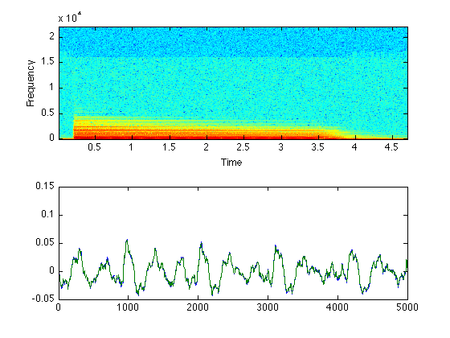

MP3 reading and writing
These function, mp3read and mp3write, aim to exactly duplicate the operation of wavread and wavwrite for accessing soundfiles, except the soundfiles are in Mpeg-Audio layer 3 (MP3) compressed format. All the hard work is done by external binaries written by others: mp3info to query the format of existing mp3 files, mpg123 to decode mp3 files, and lame to encode audio files. Binaries for these files are widely available (and may be included in this distribution).
These functions were originally developed for access to very large mp3 files (i.e. many hours long), and so avoid creating the entire uncompressed audio stream if possible. mp3read allows you to specify the range of frames you want to read (as a second argument), and mp3read will construct an mpg123 command that skips blocks to decode only the part of the file that is required. This can be much quicker (and require less memory/temporary disk) than decoding the whole file.
mpg123 also provides for "on the fly" downsampling at conversion to mono, which are supported as extra options in mp3read.
mpg123 can read MP3s across the network. This is supported if the FILE argument is a URL (e.g. beginning 'http://...').
mp3info sometimes gets the file size wrong (as returned by the mp3read(...'size') syntax). I'm not sure when this happens exactly, but it's probably a result of VBR files. In the worst case, figuring the number of samples in such a file requires scanning through the whole file, and mp3info doesn't usually do this.
For more information, including advice on handling MP4 files, see http://labrosa.ee.columbia.edu/matlab/mp3read.html
Contents
Example usage
Here, we read a wav file in, then write it out as an MP3, then read the resulting MP3 back in, and compare it to the original file.
% Read an audio waveform [d,sr] = wavread('piano.wav'); % Save to mp3 (default settings) mp3write(d,sr,'piano.mp3'); % Read it back again [d2,sr] = mp3read('piano.mp3'); % mp3 encoding involves some extra padding at each end; we attempt % to cut it off at the start, but can't do that at the end, because % mp3read doesn't know how long the original was. But we do, so.. % Chop it down to be the same length as the original d2 = d2(1:length(d),:); % What is the SNR (distortion)? ddiff = d - d2; disp(['SNR is ',num2str(10*log10(sum(d(:).^2)/sum(ddiff(:).^2))),' dB']); % Do they look similar? subplot(211) specgram(d(:,1),1024,sr); subplot(212) plot(1:5000,d(10000+(1:5000),1),1:5000,d2(10000+(1:5000))); % Yes, pretty close % % NB: lame followed by mpg123 causes a little attenuation; you % can get a better match by scaling up the read-back waveform: ddiff = d - 1.052*d2; disp(['SNR is ',num2str(10*log10(sum(d(:).^2)/sum(ddiff(:).^2))),' dB']);
Warning: popenw not available, writing temporary file SNR is 22.632 dB SNR is 24.8699 dB
Delay, size, and alignment
In mid-2006 I noticed that mp3read followed by mp3write followed by mp3read effectively delayed the waveform by 2257 samples (at 44 kHz). So I introduced code to discard the first 2257 samples to ensure that the waveforms remained time aligned. As best I could understand, mpg123 (v 0.5.9) was including the "warm-up" samples from the synthesis filterbank which are more properly discarded.
Then in late 2009 I noticed that some chord recognition code, which used mp3read to read files which were then segmented on the basis of some hand-marked timings, suddenly started getting much poorer results. It turned out that I had upgraded my version of mpg123 to v 1.9.0, and the warm-up samples had been fixed in this version. So my code was discarding 2257 good samples, and the data was skewed 51ms early relative to the hand labels.
Hence, the current version of mp3read does not discard any samples by default -- appropriate for the recent versions of mpg123 included here. But if you know you're running an old, v 0.5.9, mpg123, you should edit the mp3read.m source to set the flag MPG123059 = 1.
Note also that the 'size' function relies on the number of blocks reported by mp3info. However, many mp3 files include additional information about the size of the file in the so-called Xing header, embedded in the first frame, which can specify that a certain number of samples from start and end should additionally be dropped. mp3info doesn't read that, and there's no way for my code to probe it except by running mpg123. Hence, the results of mp3read(fn,'size') may sometimes overestimate the length of the actual vector you'll get if you read the whole file.
External binaries
The m files rely on three external binaries, each of which is available for Linux, Mac OS X, or Windows:
mpg123 is a high-performance mp3 decoder. Its home page is http://www.mpg123.de/ .
mp3info is a utility to read technical information on an mp3 file. Its home page is http://www.ibiblio.org/mp3info/ .
lame is an open-source MP3 encoder. Its homepage is http://lame.sourceforge.net/ .
The various authors of these packages are gratefully acknowledged for doing all the hard work to make these Matlab functions possible.
Installation
The two routines, mp3read.m and mp3write.m, will look for their binaries (mpg123 and mp3info for mp3read; lame for mp3write) in the same directory where they are installed. Binaries for different architectures are distinguished by their extension, which is the standard Matlab computer code e.g. ".mac" for Mac PPC OS X, ".glnx86" for i386-linux. The exception is Windows, where the binaries have the extension ".exe".
Temporary files will be written to (a) a directory taken from the environment variable TMPDIR (b) /tmp if it exists, or (c) the current directory. This can easily be changed by editing the m files.
% Last updated: $Date: 2009/03/15 18:29:58 $ % Dan Ellis <dpwe@ee.columbia.edu>